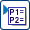
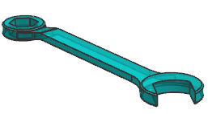

导入的参数将控制部件的大小、长度以及扳手开口端的角度。
在表达式对话框的列出的表达式列表中，选择命名的。
注意到在当前部件中没有命名的表达式。
点击从文件导入表达式 。
将提示您选择想要导入的文件，并设置导入选项。
在导入表达式文件对话框的导入选项组中，选择替换现有的。
选择前面创建的文件并点击确定。
选择替换现有的选项，则任何与导入表达式的名称相同的表达式，都将被导入的的表达式替换。
文本文件中的表达式已经被添加到部件中，但尚未更新模型。
点击确定以关闭表达式对话框，查看导入的表达式对部件的影响。

注意到扳手的大小以及开口的角度已发生变化，查看用于创建扳手开口端以及封闭端的草图可能更有帮助。